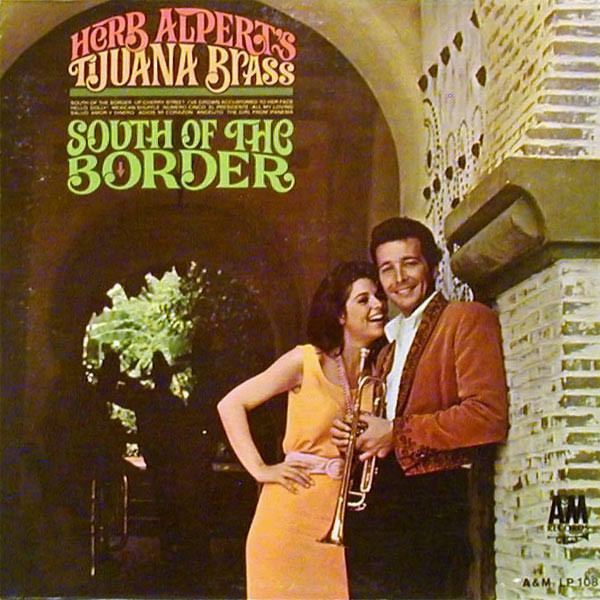

LP
South Of The Border
Herb Alpert & The Tijuana Brass
Media: — · Sleeve: —
—
Personal
Discogs SuggestedCA$31.43
Discogs MedianCA$31.43
Discogs HighCA$31.43
- Physical Copy ID
- BB-LP-146
- Year
- 1964
- Label
- A&M Records, A&M Records, A&M Records
- Catalog #
- LP 108, A&M 108, A&M LP 108
- Country
- USUS
- Genre / Style
- Jazz, Latin, Pop · Latin Jazz, Mariachi, Easy Listening, Bossa Nova